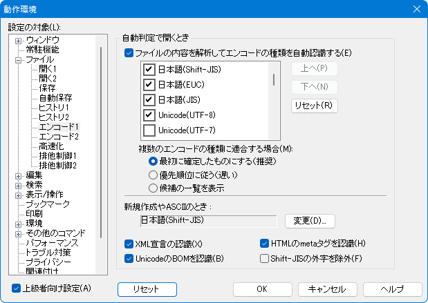

[HME0074A]
●特定のファイルを開くと文字化けする

- 秀丸エディタやメモ帳で作成したテキストファイルのうち、ある特定のファイルを開いたときに、文字化けしてしまいます。

-
「その他」-「動作環境」の「ファイル」 - 「エンコード１」 - 「自動判定で開くとき」に「ファイルの内容を解析してエンコードの種類を自動認識する」というオプションがあります。
(「エンコード1」が表示されていない場合は、「動作環境」画面左下にある「上級者向け設定」をONにしてください)これをONにすると、ファイルの内容を調べエンコードを自動認識しますが完全ではありません。 (全てのエンコードを間違いなく判定するのは無理です)

複数のエンコードに適合する場合の動作としては、以下になります。
- 最初に確定したものにする
- 優先順位に従う
- 候補の一覧を表示
「候補の一覧を表示」以外は設定に従いエンコードを決めてしまうので、エンコードが一致しないと文字化けする場合があります。「候補の一覧を表示」を選択して自分で判断するか、エンコードの優先順位を変更する事で回避できるかもしれません。
XML/HTML等で、ファイル内のエンコード指定と実際のエンコードが一致していない場合も、文字化けする事もあります。エンコードの指定を修正するか、ファイル自体のエンコードを修正してください。
自動認識できなかった場合は、「標準のエンコードの種類」で設定された内容が選択されます。